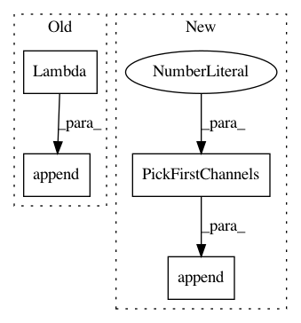

121a6342164d8f3640af23ee3816926c9fc6836e,main.py,,get_train_utils,#Any#Any#,124
Before Change
spatial_transform.append(ColorJitter())
spatial_transform.append(ToTensor())
if opt.input_type == "flow":
spatial_transform.append(Lambda(lambda img: img[:2, :, :]))
spatial_transform.append(ScaleValue(opt.value_scale))
spatial_transform.append(normalize)
spatial_transform = Compose(spatial_transform)
After Change
spatial_transform.append(ColorJitter())
spatial_transform.append(ToTensor())
if opt.input_type == "flow":
spatial_transform.append(PickFirstChannels(n=2))
spatial_transform.append(ScaleValue(opt.value_scale))
spatial_transform.append(normalize)
spatial_transform = Compose(spatial_transform)
In pattern: SUPERPATTERN
Frequency: 3
Non-data size: 4
Instances
Project Name: kenshohara/3D-ResNets-PyTorch
Commit Name: 121a6342164d8f3640af23ee3816926c9fc6836e
Time: 2020-02-18
Author: kensho.hara@aist.go.jp
File Name: main.py
Class Name:
Method Name: get_train_utils
Project Name: kenshohara/3D-ResNets-PyTorch
Commit Name: 121a6342164d8f3640af23ee3816926c9fc6836e
Time: 2020-02-18
Author: kensho.hara@aist.go.jp
File Name: main.py
Class Name:
Method Name: get_inference_utils
Project Name: kenshohara/3D-ResNets-PyTorch
Commit Name: 121a6342164d8f3640af23ee3816926c9fc6836e
Time: 2020-02-18
Author: kensho.hara@aist.go.jp
File Name: main.py
Class Name:
Method Name: get_val_utils